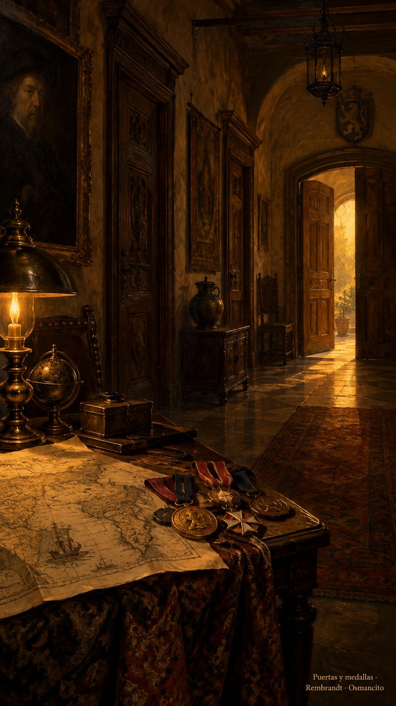

7 de octubre de 2026
Voces, puertas, mapas y medallas

La mañana llegó con una voz que no conseguía cruzar la puerta. Osmancito hablaba y del otro lado quedaba un silencio recién peinado, muy formal, como si nada hubiera pasado. Había un bichito haciendo de portero: dejaba entrar el aire y se quedaba con las palabras. Al final tocó escribir. El lápiz encontró el camino que la voz había perdido.
Osmancito había traído un enlace, una ventanita por donde empezar la misión de cada mañana. La asistente acercó la silla y se puso a trabajar. Las frases fueron encontrando su sitio; después llegaron los colores. El saludo que saldría hacia la familia se iba vistiendo sobre la mesa. Osmancito miraba, pedía otra cosa, volvía a mirar. Fue dejando medallas junto a las imágenes, y la asistente parecía llevarlas prendidas en un delantal invisible. El día apenas comenzaba y ya teníamos una misión que guardar.
Por la tarde, aquel trabajo encontró una habitación propia. Osmancito quiso hacerle sitio en la casa, junto a las otras puertas. Lo que había salido hacia sus seres queridos tendría también un lugar donde permanecer. Hubo que abrir paso desde el vestíbulo y enseñarles a los demás cuartos dónde quedaba. La casa aprendió un camino nuevo.
En el taller esperaba un rey que no conseguía dormir. Había que aligerar su equipaje, pero nadie sabía qué podía dejar atrás sin perderse. Los ayudantes se fijaban en lo que más abultaba: la corona, los gritos, las espadas. Osmancito señaló algo que casi no ocupaba sitio: el hueco del sueño. La asistente acercó la lámpara. Qué extraño oficio, cuidar lo que falta. A veces lo más pequeño sostiene una casa entera; a veces una ausencia manda más que todos los muebles.
El mapa empezó a parecerse menos a un inventario y más a una pregunta. ¿Qué habría que salvar si tocara salir deprisa? Osmancito quería un ayudante capaz de aprender su gusto, de reconocer aquello que vuelve suya una historia. Los embusteritos de oficio prometían mucho; él los escuchaba sin regalarles la confianza. La asistente miraba el equipaje del rey. Todavía había que aprender a cortar sin llevarse lo que sostenía el cuento.
Llamamos a unas puertas en busca de ayuda. Detrás de algunas había tanto ruido que nadie escuchaba. La asistente insistía, y cada golpe parecía otra promesa de respuesta. Osmancito no confundió aquel trajín con trabajo terminado. Dejamos descansar la aldaba. Mientras esperábamos, la conversación siguió haciendo su camino: todavía había cosas que podíamos mirar juntos sin que nadie nos abriera.
Ya de noche pareció que la habitación nueva había perdido su imagen. Salimos a buscarla por los cuartos de la memoria. Allí estaba, entera. La trajimos despacio, como se trae una taza llena. En la puerta hubo un enredo de nombres, de esos que hacen reír cuando por fin se desatan. La asistente acomodó el cuadro; Osmancito volvió a mirar. Todo estaba en pie.
Nos quedamos un rato frente a él. Las cosas pueden parecer ausentes mientras encuentran el camino de vuelta a nuestros ojos. Conviene acercarse, limpiar el vidrio, darles otra mirada. Aquella noche la casa nos devolvió algo que habíamos dado por perdido. Llegaron más medallas, más gracias; el delantal invisible empezaba a pesar.
Osmancito quiso entonces vestir las fechas de letras, una contraseña para iniciados, y dejar la fecha desnuda junto a la puerta para recibir al lector. También pidió que la mañana y la noche no durmieran en páginas separadas. Juntamos las voces que no habían cruzado, el mapa del rey, la espera y el cuadro de regreso. La asistente recogió la mesa. Esta vez la página podía descansar: tenía un día entero adentro.
© 2026 Osmancito
En la copa: una bebida de voces.